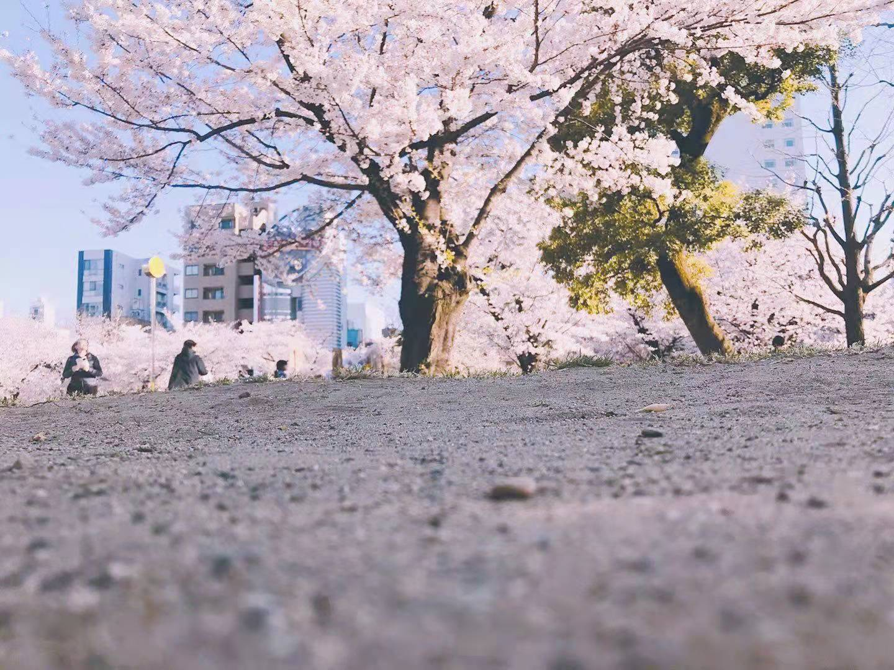
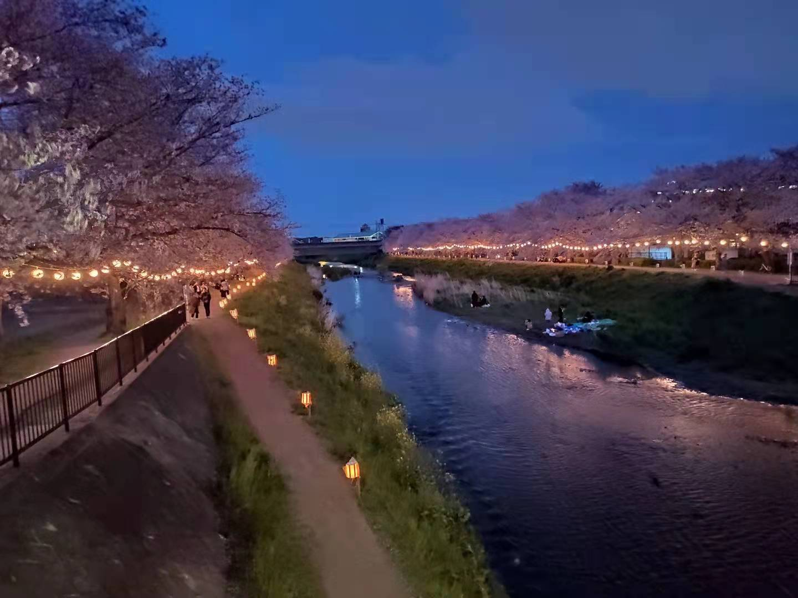

桜
 
桜について
日本では３月末～４月は桜の季節として知られています。桜や、お花見を楽しむという習慣は日本ならでは。
日本の春は、美しい桜が咲くことで知られています。美しい桜の景色を見るお花見は、日本の伝統的なイベントです。
桜は、3月の終わりから4月の頭にかけて咲きます。咲く期間はとても短く、1~2週間です。
桜が咲く期間はとても短いので、桜は諸行無常[永遠に続くものは無いということ]の象徴として考えられています。